Fictional QA data, local preview. Before is HEAD fae3512; after is branch claude/owner-batch-1.
Approve, Decline, swipe and the swipe hint are gone. "Review time off" opens the full request (dates, full day, note) with the decision there.
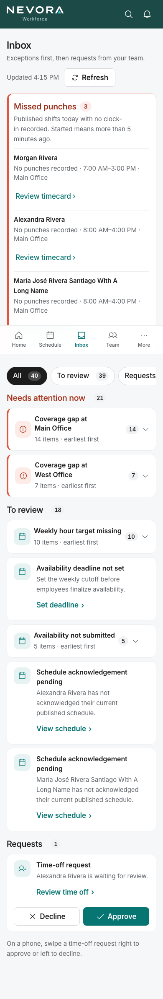
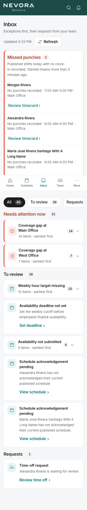
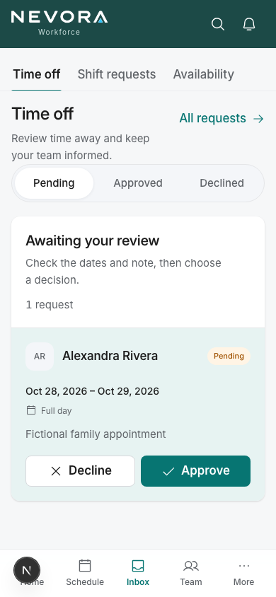
0 of 10 counted owners and managers. Now 0 of 5, labelled "Employees and leads". Team size stays 10.
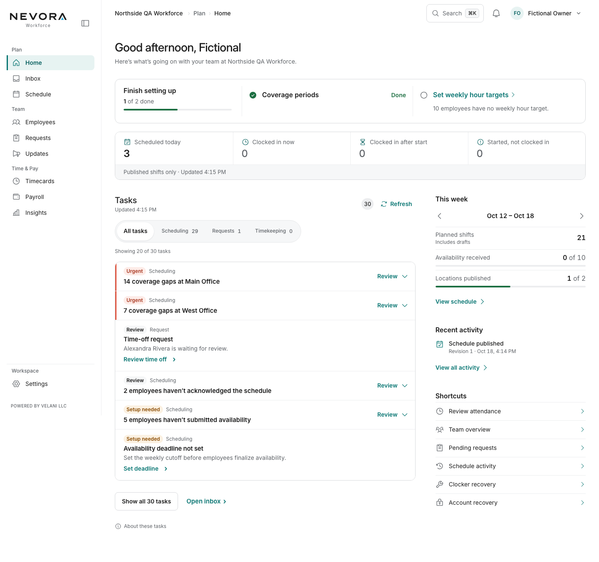
00:00–24:00 showed "12:00 AM – 12:00 AM". Stored values unchanged; an end at 24:00 now reads "midnight".
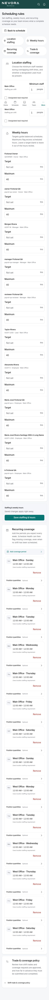
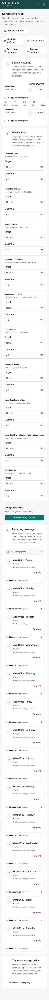
Before: 10 "need attention" and a solid teal Approve on every row, all disabled. After: 0 need attention, a clock icon, one line saying when approval opens; your own card says it needs a different manager.
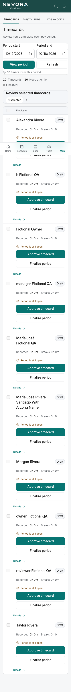
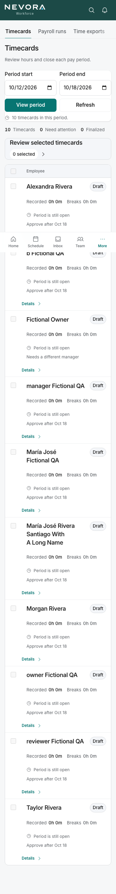
Enabled Approve stays teal; disabled Finalize is a grey surface with a readable label. Columns line up, and the long name no longer runs into Details.
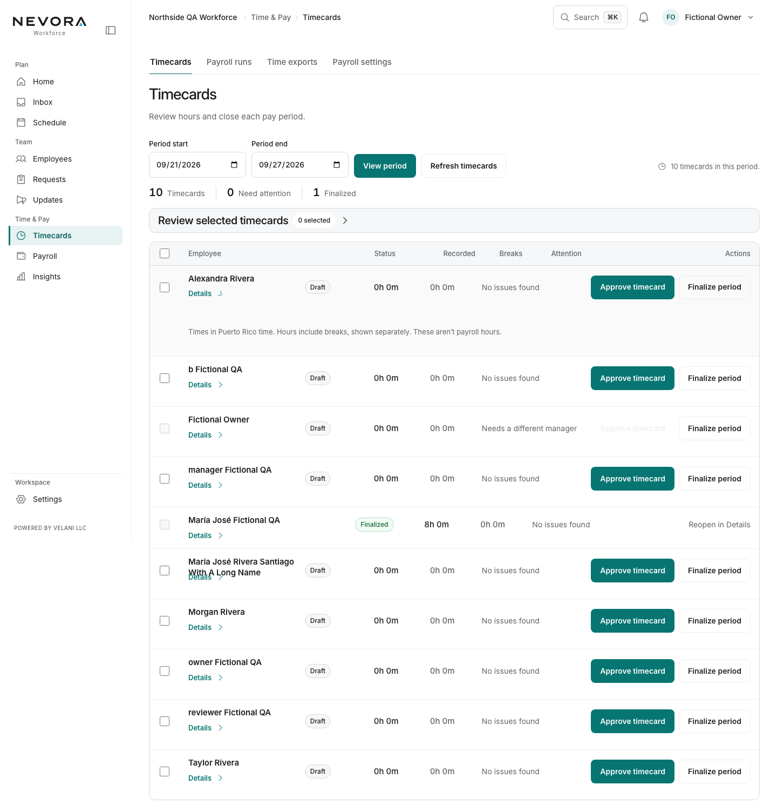
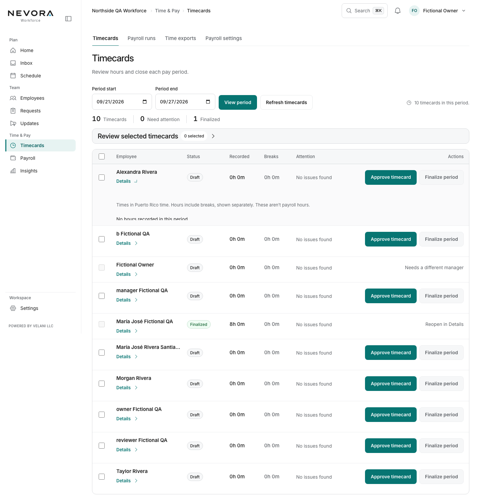
"Review timecard" for Morgan now opens /app/timecards#timecard-AUDIT-M with Morgan's row focused, instead of the top of Timecards.
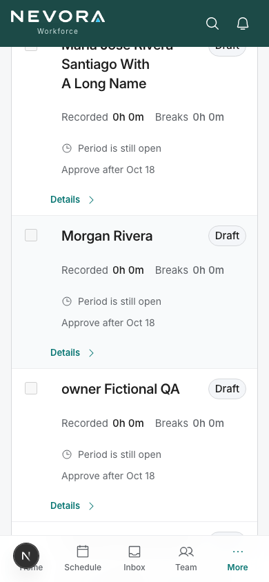